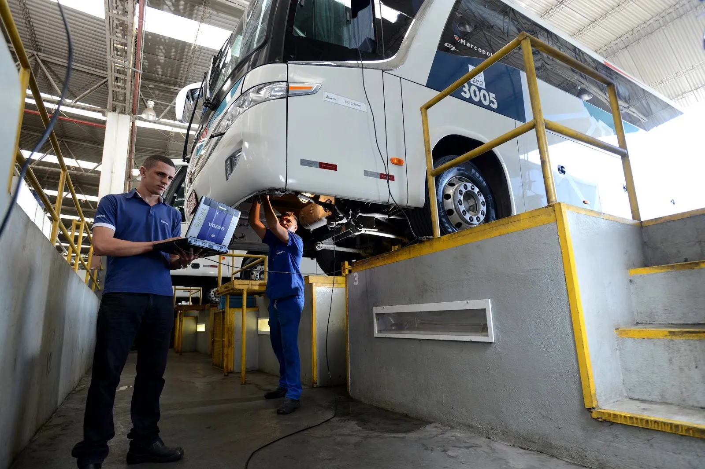

Importância da manutenção preventiva para ônibus de frota
Manter a frota em perfeito estado é essencial para garantir segurança, economia e longevidade dos veículos.
A manutenção preventiva evita falhas inesperadas, reduz custos com reparos emergenciais e aumenta a satisfação dos passageiros.
Além disso, esta prática ajuda a manter o valor do veículo e a assegurar que o transporte seja realizado dentro dos padrões de qualidade exigidos.
Empresas que investem em manutenção preventiva também promovem um ambiente de trabalho mais seguro para motoristas e colaboradores.
← Voltar ao Blog